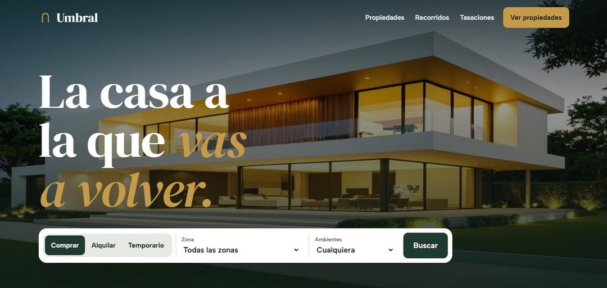
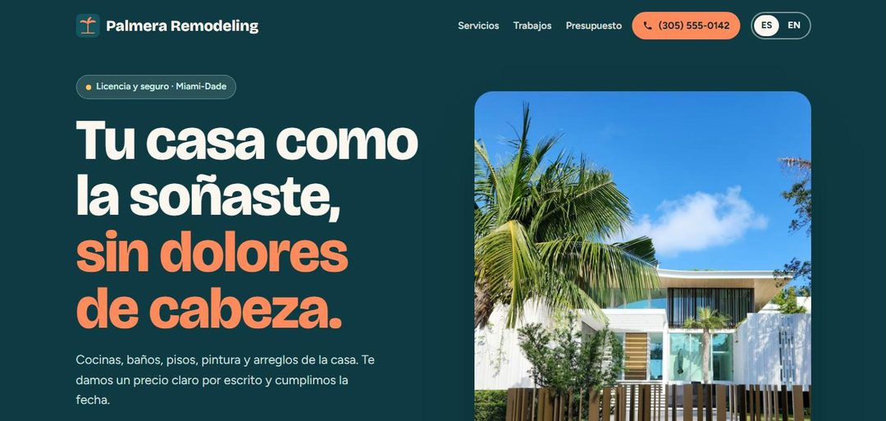
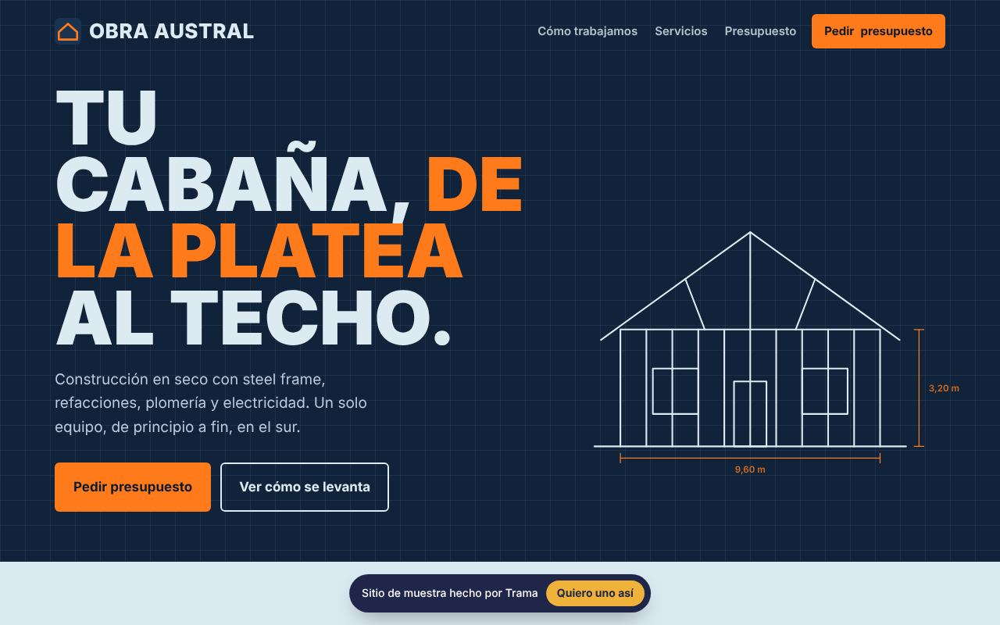
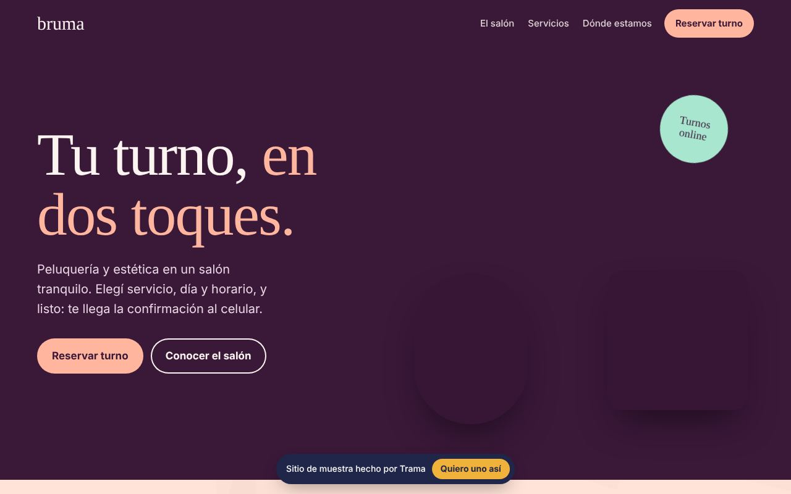
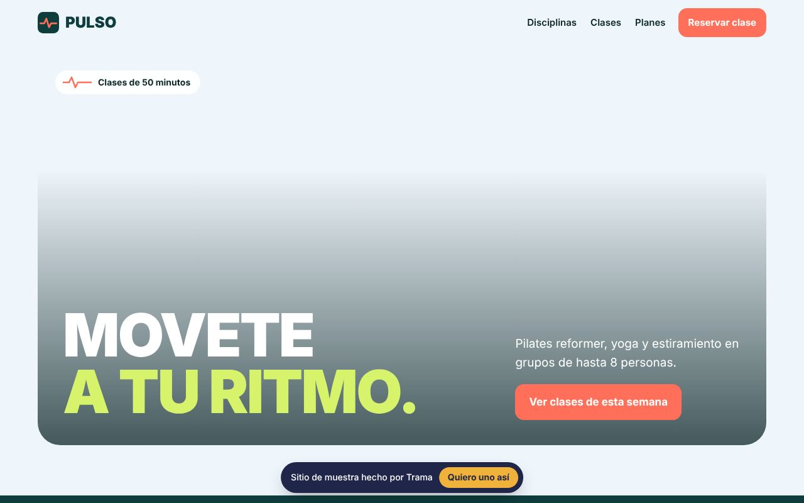
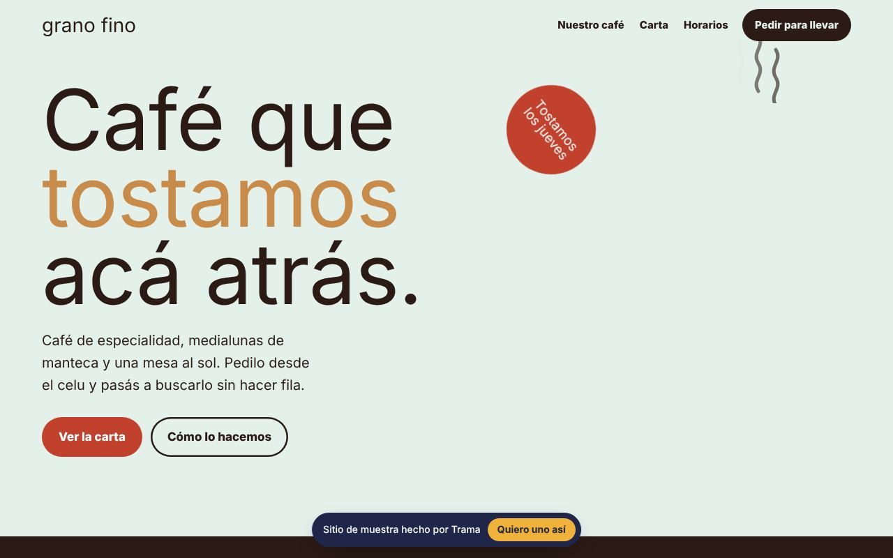
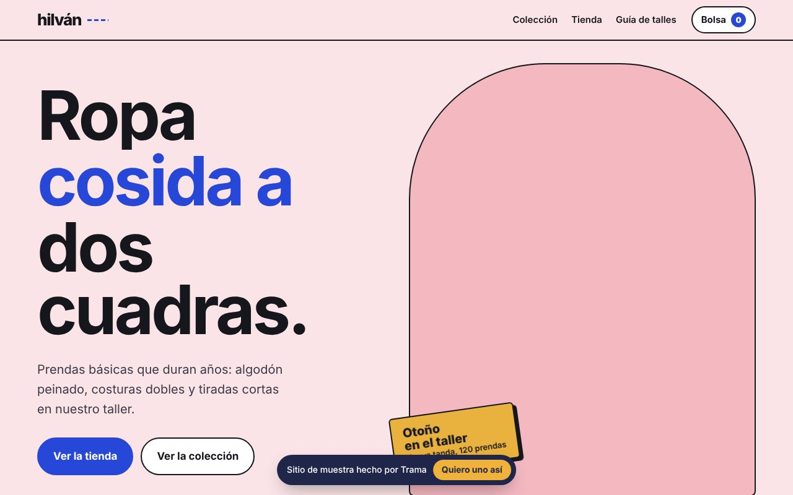

Inmobiliaria
Umbral
Buscador de propiedades con filtros por operación, zona y ambientes, fichas con fotos y consulta directa por WhatsApp.
BuscadorFichasWhatsApp
Abrir la web ↗■ Webs de muestra
Trama es mi estudio de webs e Instagram para negocios. Estas son webs de muestra que armé para distintos rubros: se pueden recorrer completas, desde la compu o el celular.

Buscador de propiedades con filtros por operación, zona y ambientes, fichas con fotos y consulta directa por WhatsApp.

Web en español e inglés para una empresa de remodelación: trabajos, servicios y pedido de presupuesto.

Cabañas en steel frame y refacciones: cómo trabajan, servicios y pedido de presupuesto.

Reserva de turnos en dos toques: el cliente elige servicio, día y horario, y le llega la confirmación al celular.

Grilla de clases con filtro por disciplina, planes y reserva de una clase de prueba.

Carta online y pedido para llevar: el cliente arma su pedido desde el celular y pasa a retirarlo.

Tienda con colección, bolsa de compras y guía de talles, pensada para comprar desde el celular.
Web + Instagram, con el dominio a tu nombre.